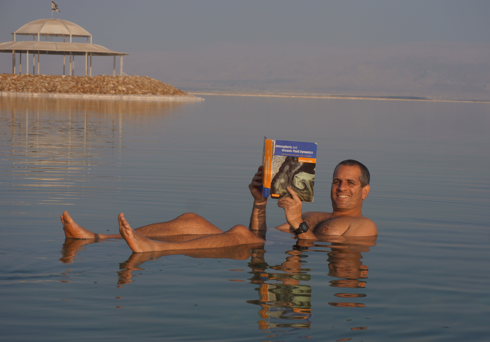

<font
 face=" Verdana, Lucida, Gill Sans,  Helvetica, Arial, Geneva, sans-serif">
 <font size="2">
<br>
<body>
	
	
	<h3> Yohai Kaspi studying buoyancy in the Dead Sea: </h3>
	
	
	
<P ALIGN="CENTER"><BR>
 </P>
</CENTER><P>
 <BR>
	 
	 <br>
	 
	 If you want to find out about the interesting things that Yohai really studies, go to:
	 <br><br>
	 <A HREF = http://www.weizmann.ac.il/eserpages/kaspi/>Yohai's web site, by clicking here.
	 </a> 
	 

 </P>
 <!-- Start of StatCounter Code -->
 <script type="text/javascript" language="javascript">
 var sc_project=2329354; 
 var sc_invisible=0; 
 var sc_partition=21; 
 var sc_security="6215c22f"; 
 var sc_text=2; 
 </script>

 <script type="text/javascript" language="javascript" src="http://www.statcounter.com/counter/counter.js"></script><noscript><a href="http://www.statcounter.com/" target="_blank"></a> </noscript>
 <!-- End of StatCounter Code -->

 </center>
 </body>
 </html>


